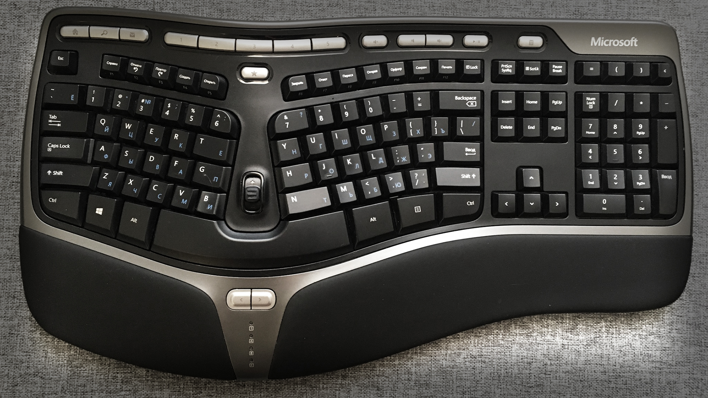
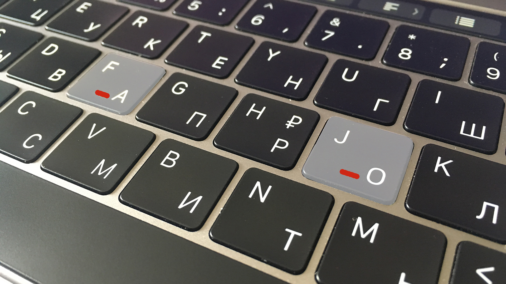
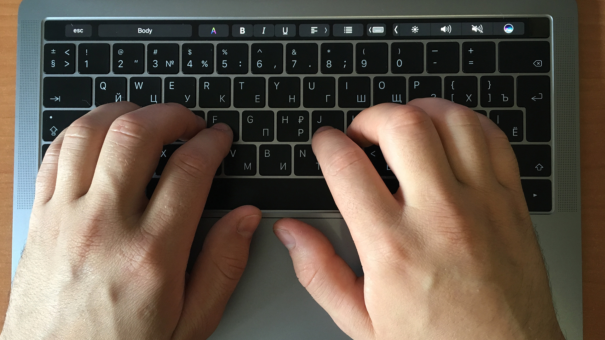
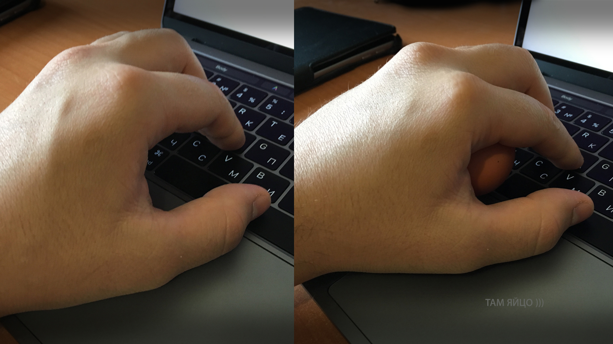
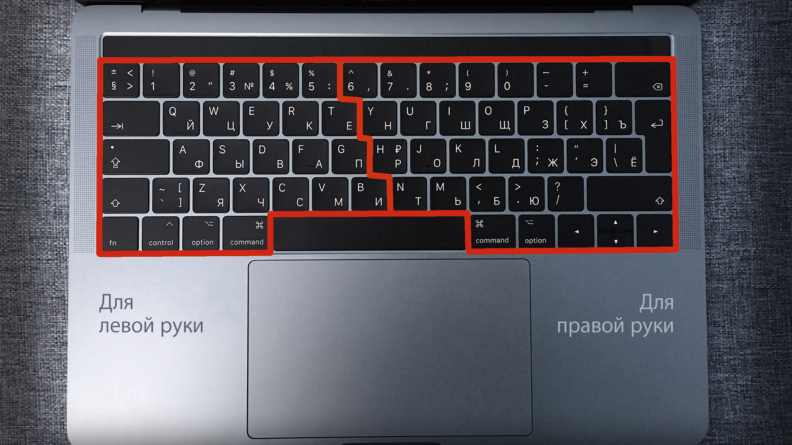
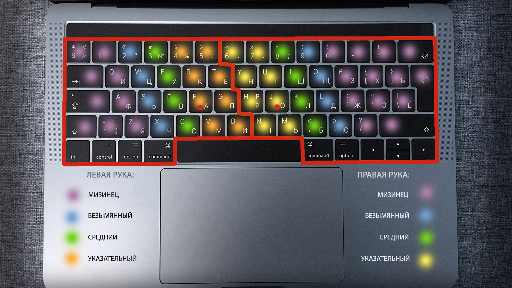

В этом уроке вы узнаете, что такое слепая печать, как максимально быстро научиться печатать десятипальцевым методом, а также мы познакомимся с одним из самых эффективных тренажеров, который сделает вашу работу быстрее, проще и приятней.

Используемый тренажер: klava.org
Теория слепой печати или слепого метода набора
Прежде, чем мы приступим к основной теме, небольшое, но важное отступление. В мире существует огромное количество клавиатур разной конфигурации и устройства. Мне посчастливилось работать со многими из них - начиная от огромных старинных монстров, заканчивая современными слим-клавиатурами. Разницы на чем учиться слепой печати нет абсолютно никакой. Даже если у вас Mac или PC клавиатура. Разница там небольшая.
Однажды я, по рекомендации знакомых и по незнанию своему использовал в качестве тренажера слепой печати легендарную - Microsoft Natural Ergonomic Keyboard 4000. Проблем особо не заметил в использовании, однако переход на клавиатуры другого типа требовал определенного времени и привыкания. Поэтому в данном выпуске я воздержусь от рекомендаций конкретных клавиатур и мы перейдем сразу к делу. Отмечу только, что работаю я с QWERTY раскладкой, ее и рекомендую к изучению.
Скорость слепой печати зависит от множества факторов: конечно-же от тренировок и от физиологических особенностей строения рук. В этом плане, как мне казалось раньше, мне повезло меньше, чем кому бы то ни было. Все время тренировок меня не покидала мысль, что это вообще не мое, что мои руки просто «не заточены» для слепой печати на клавиатурах современного типа и я был глубоко уверен, что в мире где-то есть идеальная миниатюрная клавиатура, которая подойдет только мне.
Конечно-же, спустя какое-то время я понял, что физиологически разница между длинной худощавой и небольшой кистью не так важна в контексте размера практически любой клавиатуры и что боль испытывают все, кто тренируется печатать вслепую. Причем боль эта не физическая - для подобных тренировок нужны очень крепкие нервы.
Процесс тренировок слепой печати очень напомнил мне обучение игре на гитаре. То чувство, когда ничего не получается и появляется желание бросить инструмент об стену.
Однако когда я обучался слепой печати, я записывал все свои ощущения, успехи и неудачи в блокнот, чтобы в дальнейшем можно было поделиться своими мыслями и советами, которые, надеюсь, подбодрят вас в этом нелегком деле. И прежде, чем мы уже наконец-то перейдем к практической части…
Немного советов тем, кто только начал изучать слепую печать
- Старайтесь выполнять упражнения медленно, каждый палец - отдельная клавиша. Лучше медленно и без ошибок, чем быстро и с ошибками. В противном случае ошибки будут повторяться и запоминаться снова и снова;
- У вас никогда не получится все и сразу. Проявите терпение, даже когда после сотого повторения вы ошибаетесь. Избегайте соблазна вернуться к старому методу печати, который вы использовали ранее или использовать новый метод вперемешку со старым. Одна клавиша - определенный палец, и никак иначе. Это боль и я ее помню. Я с вами!
- Не старайтесь быстро нарастить темп печати, даже если у вас все получается. Вспомните, как аккуратно вы учились кататься на велосипеде. Быстро наращивая темп - вы увеличиваете количество ошибок;
- Как не одолевала бы лень, каждые пол-часа отвлекайтесь от работы, включайте тренажер, нащупывайте стартовую позицию для печати и начинайте печатать (об этом чуть позже);
- По началу будет казаться, что все время нужно будет нащупывать позицию и отношение соседних клавиш к ней и это несколько демотивирует. Однако, это не так. Скоро ваши руки будут порхать над клавиатурой. А пока постарайтесь не «уезжать» указательными пальцами далеко от стартовой позиции;
- Первое время вам будет казаться, что раскладка настолько непродуманна и неудобна, что инженер разрабатывал ее скорее всего под чем-то. Однако, это ощущение в скором времени пройдет;
- Вы впервые почувствуете, насколько слабы ваши пальцы, которым уготована самая сложная участь - это перефирийные клавиши. Ваши безымянный палец и мизинец вечно будут не дотягиваться туда, куда надо и вас это может раздражать в первое время. Этот момент также решается тренировками;
- рогресс будет ощущаться не сразу, а «волнами» - сначала вроде получается, а спустя какое-то время вам будет казаться, что вы только сели за тренажер и некоторые моменты приходится тренировать заново. Это также несколько демотивирует, но с практикой проходит и ваш навыки печати становится относительно ровным и плавным;
- Первое время вы будете замечать, что слепая печать у вас получается, но не так равномерно, как хотелось-бы. Печатать вы будете «рывками», делая небольшие паузы, чтобы продумать следующее нажатие или комбинацию нажатий. В этом нет ничего плохого, просто старайтесь выравнивать ваш темп;
- Самое главное помните - вас ждет достойная награда за ваши старания и усилия - это быстрая и легкая печать, от которой вы будете получать удовольствие. Вы сможете более правильно контролировать вашу осанку, не отвлекаясь на процесс печати, меньше утомляться и выполнять вашу работу быстрее, чем раньше.
Постановка рук при слепой печати
Вы наверняка замечали у двух клавиш с русскими буквами А (лат. F) и О (лат. J) небольшие выступы или бугорки. Эти выступы предназначена для определения стартовой позиции указательных пальцев. Положите указательный палец вашей левой руки на русскую «А», а указательный палец правой руки на букву О. Два больших пальца положите на пробел или около него, а остальный распределите в ряд по горизонтали влево и вправо соответственно:
В результате у вас должно получиться следующим образом:
- Левая рука:
- Указательный палец левой руки лежит на русской букве А и нащупывает бугорок;
- Средний палец левой руки лежит на русской букве В;
- Безымянный палец левой руки лежит на русской букве Ы;
- Мизинец левой руки лежит на русской букве Ф.
- Правая рука:
- Указательный палец правой руки лежит на русской букве О и нащупывает бугорок;
- Средний палец правой руки лежит на русской букве Л;
- Безымянный палец правой руки лежит на русской букве Д;
- Мизинец правой руки лежит на русской букве Ж.
Если посмотреть сверху, обе руки должны лежать на позициях ФЫВА ОЛЛЖ, где А и О являются контрольными клавишами для определения стартовой позиции.
Стоит отметить, что немаловажно и состояние ваших рук. Они не должны быть ни слишком расслаблены, ни слишком скованы. В идеале должно быть ощущение, что вы держите небольшого размера куриное яйцо в расслабленной руке. Только не переусердствуйте при проверке размера на вашей клавиатуре, в противном случае придется покупать новую. Ваша ладонь должна как-бы надвисать над клавиатурой в полусферическом состоянии. Запястья не должны висеть. Положите их на стол или на подставку рядом с клавиатурой (ноутбука, например). Думаю, смысл понятен.
Перед началом тренировок стоит визуально разделить клавиатуру на 2 части - левую (для левой руки) и правую (для правой руки). Внимательно посмотрите на картинку и на линию разделения. Правая рука ни в коем случае не должна нарушать границу левой руки, даже если вам этого очень хочется, а левая - границу правой и залазить на символы, которые предназначены для правой. Это самое первое и самое простое правило. Запомните, на границе каких клавиш проходит разделительная линия.
Пробел в данном случае является единственной общей клавишей, которую необходимо нажимать большим пальцем той руки, которая в настоящее время свободна. Обычно я использую правую руку для нажатия пробела. Но к этому мы еще вернемся и обратимся к рекомендациям виртуального тренажера.
После того, как мы определили позиции для указательных пальцев и визуально разделили клавиатуру для каждой руки, разделим наши участки под каждый конкретный палец.
Давайте посмотрим следующее изображение:
Кроме разделения на 2 части, мы видим расцветку и для каждого пальца и две стартовые точки для указательных пальцев. Если внимательно посмотреть на изображение, то мы видим, что больше всего достается именно самому слабенькому пальчику - мизинцу. Такова его участь, что ж. Но и указательные также нагружаются неслабо. В отличие от среднего и безымянного, на которые приходится всего по одному ряду, указательные пальцы обеих рук обслуживают по 2 ряда. Меньше всего на свете повезло несчастному мизинчику правой руки, его «поле деятельности» поистине огромно. Однако следует отдать должное - в этих местах собрались далеко не самые популярные символы для повседневных задач.
Обратите внимание, что функциональные клавиши не подсвечены (control, option, command, Alt и Ctrl на PC раскладке). Связано это с тем, что каждый волен привыкать ими пользоваться так, как ему удобно. Выбор тут невелик - чаще всего это будет многострадальный мизинец, хотя клавиши «Command» вокруг пробела я привык нажимать большими пальцами ввиду их близости к самой широкой клавише «Пробел».
Прежде, чем приступить к следующей части урока, к тренажеру, попробуйте написать какой-либо текст, пользуясь приведенной шпаргалкой и опишите ваши ощущения в комментариях. Первое время можно подсматривать. Не забудьте про стартовую позицию указательных пальцев!
Практика слепой печати
Для практики используйте klava.org. Если сервис на главной не работает, нажмите зеленую кнопку "Δelta".
- Для начала потренируйтесь в режимах «Русский стартовый» и «Englisg start», пока не добьетесь скорости печати хотя-бы 100 символов в минуту. Чередуйте их между собой;
- После этого можно переходить к режимам «Русский тренировка» и «English training».
После того, как ваша скорость печати в тренажере будет составлять хотя-бы 150-200 символов в минуту, можете пробовать перепечатывать свободный текст и направить все усилия на увеличение скорости печати.
Несколько советов напоследок
- Старайтесь всегда использовать метод слепой печати, даже если вы просто переписываетесь с друзьями в социальных сетях. Да, это будет дольше обычного, но лучшая практика та, которая является необходимостью;
- Всегда возвращайтесь к стартовой позиции перед началом набора текста, даже если уверены, что следующий символ будет ожидаемым и вы уверены, что не допустите ошибок;
- Во время тренировок не забывайте менять раскладку с Русского на Английский языки («Русский тренировка» и «English training»);
- Уделяйте время правильному написанию мизинцем периферийных символов, не допуская ошибок. Эти пальцы больше всего нуждаются в активной тренировке;
- Зажимайте Shift только с той стороны, с противоположной которого находится буква или символ, который требуется написать с большой буквы. Например, большая буква «О» справа, соответственно, требуется зажать левый Shift;
- Никогда не возвращайтесь к старому способу набору символов, даже когда соблазн велик. Ну, разве только если у вас бутерброд в одной руке.
- Когда вы начинаете замечать, что все меньше и меньше думаете о буквах, а руки сами печатаю то, что нужно - вы на финишной прямой и вас можно поздравить. Следующий этап - тренировка скорости.
Премиум уроки от WebDesign Master


Другие уроки по теме «Инструменты»
- Настройка Parcel для веб-разработки
- Tailwind CSS для начинающих. Подробный урок по подключению, настройке и использованию
- Настройка VS Code для веб-разработки
- Starter - Простой стартер для веб-разработки
- Урок по хостингу от А до Я. Сайты, базы, домены, SSL, SSH, sFTP
- Gulp - Актуальное и исчерпывающее руководство для самых маленьких